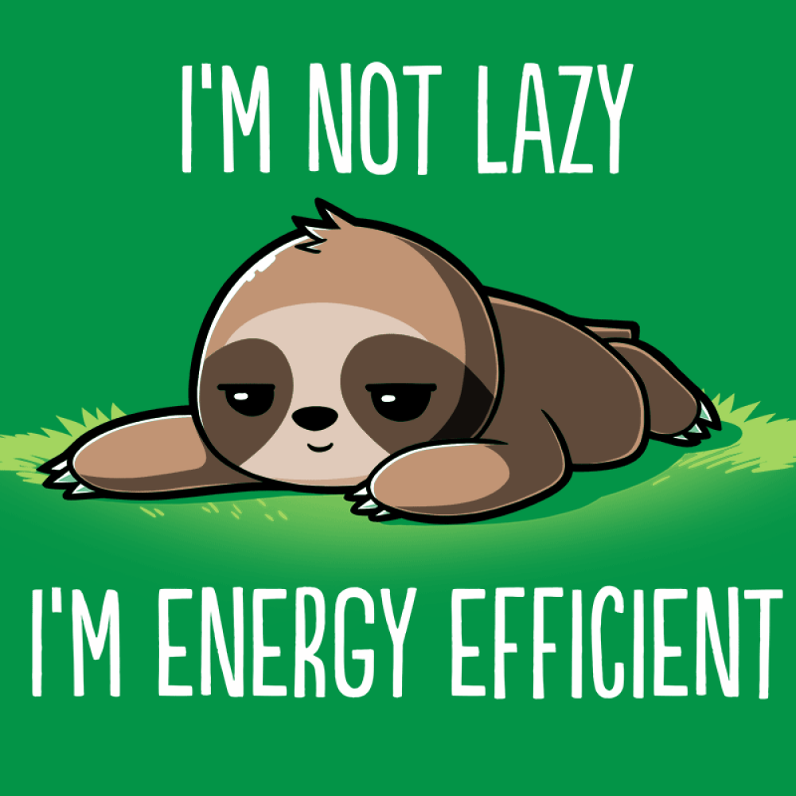

Imagine you are a homebuilder. You have been assigned to design and build 25 near-identical homes in a newly renovated area. This is a major project and your big break to prove to your bosses that you are a hardworking individual and can get the job done. You get started right away assembling the team to build the first house. It takes three months to plan the design of the first house and one more year to order materials, tools, and completely finish construction. Hooray! The first house is done, and you have 24 more to go. As you get started on planning the design of the second house, one of the workers brings up a point: don’t all the houses follow the same design? Why are we redoing this part again? This is unnecessary work!
“Don’t be lazy”, you say. “To build good homes requires lots of hard work and long hours. This is just part of the job.” The worker accepts your argument and goes back to work. It takes another 3 months to plan out the design of the second house. The necessary materials and tools need to be reordered again, and construction takes 1 year. 23 more houses to go.
This is an incredibly inefficient way of doing things because the houses are nearly identical. They will all follow essentially the same architectural design and use the same materials and tools. The construction process will also remain mostly the same. In other words, these houses all follow a common design pattern that we can use to improve efficiency. Rather than tackling each job one by one and starting from square one, a more efficient solution would be to create a blueprint that details the structure, materials, and process for all houses. Once a blueprint is made, the 3 month planning and design process can be eliminated from all future houses because they all follow the same design. Furthermore, multiple copies of the blueprint can be made and distributed to many teams at once, enabling multiple houses to be built at the same time. This is the idea of using design patterns in software engineering. A reusable solution is created to a commonly occuring problem so that the problem only has to be solved once, saving time, improving efficiency, and reducing errors.
A good example of this in software engineering is the use of classses and objects. For example, if you have to build a “contact card” for a user to store information, rather than rewriting code for a card every time a user wants to create a new contact, you can instead create a “card” class and instantiate an object every time a new card is needed. The blueprint is already made, and creating a new object is almost instantaneous. In this way, software engineers try to stay efficient by avoiding redundant work and utilizing design patterns.